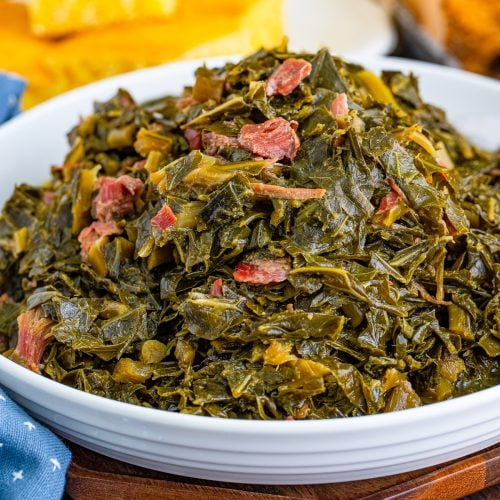

Collard-Greens

Description
This recipe will have you making collard-greens. A dish made of edible, but tasty plant leans. Often this dish will use different kinds of meats as well! You will need several ingredients.
Ingredients
- 2 pounds collard greens
- 6 to 8 thick slices bacon, or hog jowl, diced
- 6 cups of water
- 1/2 to 1 cup chopped onion
- 2 teaspoons kosher salt
- 1/2 teaspoon freshly ground black pepper
- 1/2 teaspoon crushed red pepper flakes
- 1/2 teaspoon Cajun seasoning, or seasoned salt blend, optional
Steps
- Wash collard greens in about 3 to 4 changes of water, until no sandy sediment can be felt at the bottom of the sink or bowl.
- Lay each leaf out and cut out the thick center stalk and any very thick veins. Layer several leaves and roll them; Cut the rolled leaves into 1/2-inch strips (chiffonade style). You may also chop the leaves.
- In a large skillet over medium heat cook the diced bacon or jowl to render some of the fat. Discard the drippings or save and refrigerate for another use.
- cover and simmer over medium-low heat for about 1 hour, or until greens are tender are stockpot or Dutch oven bring the 6 cups of water to a boil. Add the cooked bacon or hog jowl, the chopped onions, salt, red and black peppers, and seasoned salt or Cajun seasoning, if using. Add the greens to boiling water. You might have to add the collard greens in batches.
- Serve the collard greens with freshly baked cornbread and pass the hot pepper vinegar or pepper sauce at the table.
Collard-Greens,DONE!